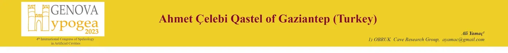

Ahmet Çelebi Qastel of Gaziantep


SKETCH OF A WELL REACHING TO A LIVAS

PİŞİRİCİ QASTEL

PANCARLI LİVAS

LIVAS L3 OF AHMET CELEBI QASTEL DURING RESTORATION

LIVAS L3 OF AHMET CELEBI QASTEL

LIVAS L3 OF AHMET CELEBI QASTEL

LIVAS' L1 AND L2 JUNCTION OF AHMET CELEBI QASTEL DURING RESTORATION

ANOTHER ACTIVE LIVAS

AHMET CELEBI QASTEL BEFORE THE RESTORATION

AHMET CELEBI QASTEL DURING RESTORATION

AHMET CELEBI QASTEL DURING RESTORATION

SIDE PROFILE DRAWING OF AHMET CELEBİ QASTEL (S. SAVCILI)

ENTRANCE STAIRS